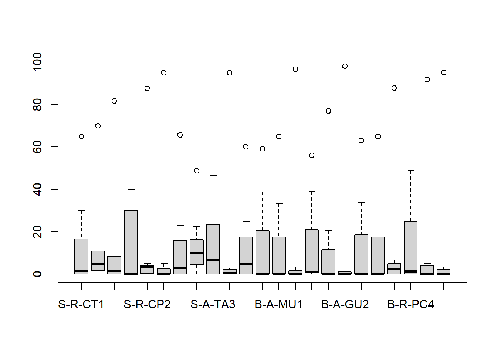
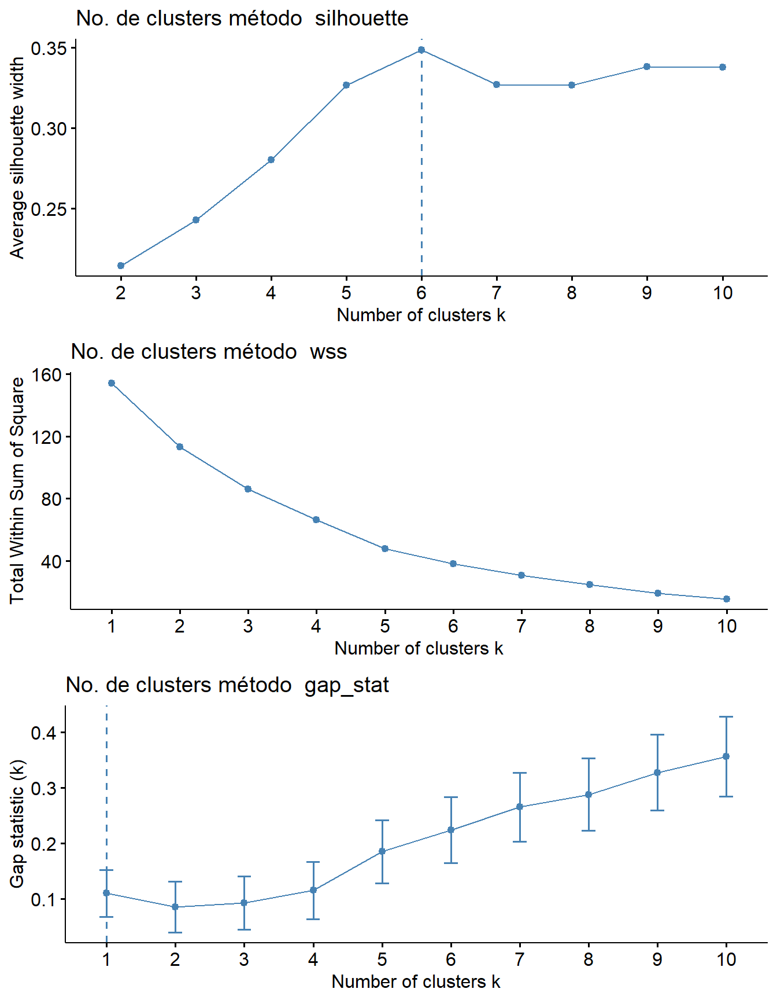

23 R Módulo 8 - Análise de Classificação Não-hierárquica - K-Means
RESUMO
O método k-means é um algoritmo de aprendizado de máquina não supervisionado utilizado para agrupar dados em clusters. Ele é um dos métodos mais populares e amplamente utilizados para tarefas de clustering ou agrupamentos. O objetivo do algoritmo k-means é particionar um conjunto de dados em k clusters, onde k é um valor pré-definido pelo usuário e um cluster é um grupo de objetos. Cada grupo é representado por seu centróide, que é o ponto médio dos dados pertencentes a esse grupo. O algoritmo busca minimizar a variância intra-cluster, ou seja, a soma dos quadrados das distâncias entre os objetos de um cluster e o centróide desse cluster.
Apresentação
O método k-means é um algoritmo de aprendizado de máquina não supervisionado utilizado para agrupar dados em clusters. Ele é um dos métodos mais populares e amplamente utilizados para tarefas de clustering ou agrupamentos.
O objetivo do algoritmo k-means é particionar um conjunto de dados em k clusters, onde k é um valor pré-definido pelo usuário e um cluster é um grupo de objetos. Cada grupo é representado por seu centróide, que é o ponto médio dos dados pertencentes a esse grupo. O algoritmo busca minimizar a variância intra-cluster, ou seja, a soma dos quadrados das distâncias entre os objetos de um cluster e o centróide desse cluster.
O processo de clustering pelo k-means envolve os seguintes passos:
Inicialização: Seleção aleatória de
kcentróides iniciais ou usando outros métodos de inicialização.Atribuição: Cada ponto de dados é atribuído ao cluster cujo centróide está mais próximo.
Atualização: Recalcula-se o centróide de cada cluster com base nos pontos de dados atribuídos a ele.
Repetição: Os passos 2 e 3 são repetidos até que os centróides dos clusters se estabilizem ou um critério de parada seja atingido.
O algoritmo k-means é iterativo e pode convergir para uma solução ótima local. Portanto, é comum executar o algoritmo várias vezes com diferentes inicializações aleatórias para melhorar a qualidade do clustering. A escolha do número de clusters (k) é um parâmetro importante e pode afetar os resultados.
O k-means é amplamente aplicado em diversas áreas, como análise de dados, mineração de dados, reconhecimento de padrões e segmentação de imagens. Ele é eficiente e escalável, tornando-o uma opção popular para clustering de grandes conjuntos de dados. No entanto, é importante ressaltar que o k-means assume que os clusters são esféricos e de tamanho similar, o que nem sempre é o caso em todos os conjuntos de dados.
23.1 Organização básica
dev.off() #apaga os graficos, se houver algum
rm(list=ls(all=TRUE)) ##LIMPA A MEMORIA
cat("\014") #limpa o console Instalando os pacotes necessários para esse módulo
23.1.1 Sobre os dados do PPBio
A planilha ppbio contém os dados de abundância de espécies em diferentes unidades amostrais (UA’s). A base teórica dos dados do PPBio para o presente estudo pode ser vista em Bases de dados. Dados do PPBio Semiárido. Leia antes de prosseguir.
23.2 REINÍCIO 1
Substitua a nova matriz aqui. Caso seja necessário.
No interesse de sistematizar o uso das várias matrizes que são comumente usadas em uma AMD, a tabela a seguir (23.1 resume seus tipos e abreviações.
| Nome | Atributos (colunas) | Abreviação no R |
|---|---|---|
| Matriz comunitaria | Os atributos são táxons ou OTU’s (Unidades Taxonômicas Operacionais) (ex. espécies, gêneros, morfotipos) | m_com |
| Matriz ambiental | Os atributos são dados ambientais e variáveis físicas e químicas (ex. pH, condutividade, temperatura) | m_amb |
| Matriz de habitat | Os atributos são elementos da estrutura do habitat (ex. macróficas, algas, pedras, lama, etc) | m_hab |
| Matriz bruta | Os atributos ainda não receberam nenhum tipo de tratamento estatísco (valores brutos, como coletados) | m_brt |
| Matriz transposta | Os atributos foram transpostos para as linhas | m_t |
| Matriz relativizada | Os atributos foram relativizados por um critério de tamanho ou de variação (ex. dividir os valores de cada coluna pela soma) | m_rel |
| Matriz transformada | Foi aplicado um operador matemático a todos os atributos (ex. raiz quadrada, log) | m_trns |
| Matriz de trabalho | Qualquer matriz que seja o foco da análise atual (ex. comunitária, relativizada, etc) | m_trab |
23.3 Classificação
Criando uma classificação baseada na distância Bray-Curtis e UPGMA como método de fusão, criada a partir da matriz de dados relativizada pelo total das colunas e transformada pelo arco seno da raiz quadrada.
library(vegan)
m_trns <- asin(sqrt(decostand(m_bruta,
method="total", MARGIN = 2)))
vegdist <- vegdist(m_trns, method = "bray",
diag = TRUE,
upper = FALSE)
cluster <- hclust(vegdist, method = "average")
plot (cluster, main = "Cluster Dendrogram - Bray-Curtis")
rect.hclust(cluster, k = 3, h = NULL)
#h = 0.8 fornece os grupos formados na altura h
as.matrix(vegdist)[1:6, 1:6]## S-R-CT1 S-R-CP1 S-A-TA1 S-R-CT2 S-R-CP2 S-A-TA2
## S-R-CT1 0.0000000 0.8743721 0.9338269 0.6274997 0.8106894 0.9420728
## S-R-CP1 0.8743721 0.0000000 0.6833816 0.7759468 0.7726098 0.7342613
## S-A-TA1 0.9338269 0.6833816 0.0000000 0.8789631 0.9178304 0.5700984
## S-R-CT2 0.6274997 0.7759468 0.8789631 0.0000000 0.7280378 0.8836068
## S-R-CP2 0.8106894 0.7726098 0.9178304 0.7280378 0.0000000 0.8915271
## S-A-TA2 0.9420728 0.7342613 0.5700984 0.8836068 0.8915271 0.0000000
23.4 Histórico das fusões
Criamos agora o histórico das fusões dos objetos. Na tabela gerada, as duas primeiras colunas (No. e UA) representam o número (No.) atribuido a cada unidade amostral (UA). As duas colunas subsequentes (Cluster1 e Cluster2) representam o par de objetos (indicado pelo sinal de “-”) ou grupo de objetos (indicado pela ausência do sinal de “-”) que foram agrupadas. A coluna Height, indica o valor de similaridade na qual um dado par de objetos (ou grupo de objetos) foi agrupado. O valor aproximado de Height também pode ser visualizado no eixo do dendrograma. Por último, na coluna Histórico, é mostrada a sequência das fusões da primeira até a n-1 última fusão entre os dois últimos grupos. Nesse caso, 22.
merge <- as.data.frame(cluster$merge)
merge[nrow(merge)+1,] = c("0","0")
height <- as.data.frame(round(cluster$height, 2))
height[nrow(height)+1,] = c("1.0")
fusoes <- data.frame(Cluster = merge, Height = height)
colnames(fusoes) <- c("Cluster1", "Cluster2", "Height")
UA <- rownames_to_column(as.data.frame(m_trns[, 0]))
colnames(UA) <- c("No. e UA")
fusoes <- cbind(UA, fusoes)
fusoes$Histórico <- 1:nrow(fusoes)
fusoes## No. e UA Cluster1 Cluster2 Height Histórico
## 1 S-R-CT1 -20 -23 0.14 1
## 2 S-R-CP1 -8 -11 0.26 2
## 3 S-A-TA1 -17 1 0.28 3
## 4 S-R-CT2 -19 -22 0.37 4
## 5 S-R-CP2 -6 -12 0.41 5
## 6 S-A-TA2 -4 -10 0.46 6
## 7 S-R-CT3 -16 4 0.48 7
## 8 S-R-CP3 -5 2 0.53 8
## 9 S-A-TA3 -13 7 0.56 9
## 10 S-R-CT4 -9 5 0.57 10
## 11 S-R-CP4 -7 6 0.59 11
## 12 S-A-TA4 -14 3 0.61 12
## 13 B-A-MU1 -2 -3 0.68 13
## 14 B-A-GU1 -1 11 0.68 14
## 15 B-R-PC2 -15 -18 0.69 15
## 16 B-A-MU2 -21 14 0.75 16
## 17 B-A-GU2 10 13 0.76 17
## 18 B-R-PC3 9 12 0.79 18
## 19 B-A-MU3 8 16 0.8 19
## 20 B-A-GU3 17 19 0.85 20
## 21 B-R-PC4 15 20 0.89 21
## 22 B-A-MU4 18 21 0.91 22
## 23 B-A-GU4 0 0 1.0 23No código acima, h = 0.8 fornece os grupos formados na altura h do eixos das distâncias do dendrograma. Ou seja, no dendrograma, o eixo y (HEIGHT, “h”) representa o valor da distancia escolhida entre os objetos ou grupos de objetos. Portanto, se dois objetos ou grupos de objetos foram agrupados num dado valor (0.8, por exemplo) no eixo height, isso significa que a distancia entre esses objetos é 0.8.
23.5 Algoritmo k-means - Versão simplificada
23.5.2 Instalar pacotes necessários
23.5.3 Importando matriz
library(openxlsx)
ppbioh <- read.xlsx("D:/Elvio/OneDrive/Disciplinas/_EcoNumerica/5.Matrizes/ppbio06p-amb.xlsx",
rowNames = T, colNames = T,
sheet = "ano1")
colnames(ppbioh)## [1] "h.macroph" "h.grass" "h.subveg" "h.overhveg" "h.litter"
## [6] "h.filalgae" "h.attalgae" "h.roots" "h.lrgdeb" "h.smldeb"
## [11] "s.mud" "s.sand" "s.smlgrav" "s.lrggrav" "s.cobbles"
## [16] "s.rocks" "s.bedrock" "m.elev" "m.river" "m.stream"
## [21] "m.distsource" "m.distmouth" "m.maxslope" "m.maxdepth" "m.habdepth"
## [26] "m.width" "a.veloc" "a.temp" "a.do" "a.transp"ppbioh_part <- subset(ppbioh,
select = c("s.mud","s.sand","s.smlgrav","s.lrggrav","s.cobbles","s.rocks","s.bedrock"))
names(which(colSums(ppbioh_part) == 0))## character(0)23.6 REINÍCIO 2
Substitua a nova matriz aqui. Caso seja necessário.
23.6.1 Algumas análises exploatórias
Dados brutos
## [1] 0 98
23.6.1.1 Relativização e transformação
Dados transformados pela função expressa em m_trns.
## [1] 0.000000 9.899495
23.6.1.2 Gráficos comparativos
par(mfrow = c(1,2))
boxplot(t(m_trab), log = "", las = 2,
ylim = c(floor(min(m_trab)), ceiling(max(m_trab))),
main = "Dados brutos")
boxplot(t(m_trns), log = "", las = 2,
ylim = c(floor(min(m_trns)), ceiling(max(m_trns))),
main = "Dados relativizados e transformados")
par(mfrow=c(1,1))
23.7 Determinando o número ideal de clusteres
23.7.1 Reescalar os dados primeiro usando a função scale()
## Welcome! Want to learn more? See two factoextra-related books at https://goo.gl/ve3WBa##
## Anexando pacote: 'gridExtra'## O seguinte objeto é mascarado por 'package:dplyr':
##
## combinem_trns_s <- scale(m_trns)
# Definindo uma função que envolve o algoritmo k-means
kmeans_fun <- function(data, k) {
kmeans(data, centers = k, nstart = 25)
}
methods <- c("silhouette", "wss", "gap_stat")
plots <- list()
for (method in methods) {
plot_title <- paste("No. de clusters método ", method)
plot <- fviz_nbclust(m_trns_s, FUNcluster = kmeans_fun, method = method) +
ggtitle(plot_title)
plots[[method]] <- plot
}No código acima, as funções scale(), reescala a matriz, fviz_ cria um gráfico que sugere o número ideal de clusteres para serem usados, e o argumento method= indica o método usado para propor o número de clusteres, que podem ser “silhouette”, “wss” e “gap_stat” (Veja Métodos de determinação de clusters em k-means nos Apêndices).
Aqui criamos uma figura com os resultados dos gráficos para cada método de proposição para o número de clusteres (Figura 23.1).

Figura 23.1: Gráficos para cada método de proposição para o número de clusteres.
Com os dados reescalados, agora fazemos uma primeira tentativa. A função set.seed() estabelece um número inicial de partida de onde serã feitas as permutações aleatórias. Nesse caso, foi usado centers=n centros para calcular os agrupamentos K-Means.
library(factoextra)
library(gridExtra)
m_trns_s <- scale(m_trns)
set.seed(666)
kmeans <- kmeans(m_trns_s, centers = 3)
kmeans #resultados descritivos da análise
fviz_cluster(kmeans, data = m_trns_s, outlier.color = "black", outlier.shape = 19,
ellipse.type = "convex") #ou "confidence"
## K-means clustering with 3 clusters of sizes 3, 9, 11
##
## Cluster means:
## s.mud s.sand s.smlgrav s.lrggrav s.cobbles s.rocks
## 1 -0.4981467 0.2643189 -0.8616320 -0.5098978 1.83999539 1.48863931
## 2 0.9046630 -1.0028428 -0.4021210 -0.3097617 -0.58268890 -0.08988163
## 3 -0.6043206 0.7484208 0.5639986 0.3925044 -0.02507146 -0.33245303
## s.bedrock
## 1 -0.2937783
## 2 0.4569884
## 3 -0.2937783
##
## Clustering vector:
## S-R-CT1 S-R-CP1 S-A-TA1 S-R-CT2 S-R-CP2 S-A-TA2 S-R-CT3 S-R-CP3 S-A-TA3 S-R-CT4
## 2 3 2 1 3 3 1 3 3 2
## S-R-CP4 S-A-TA4 B-A-MU1 B-A-GU1 B-R-PC2 B-A-MU2 B-A-GU2 B-R-PC3 B-A-MU3 B-A-GU3
## 1 3 3 2 3 3 2 3 2 2
## B-R-PC4 B-A-MU4 B-A-GU4
## 3 2 2
##
## Within cluster sum of squares by cluster:
## [1] 12.17309 35.54207 43.97147
## (between_SS / total_SS = 40.5 %)
##
## Available components:
##
## [1] "cluster" "centers" "totss" "withinss" "tot.withinss"
## [6] "betweenss" "size" "iter" "ifault"23.7.1.1 Usando os agrupamentos do kmeans$cluster
## K-means clustering with 3 clusters of sizes 3, 9, 11
##
## Cluster means:
## s.mud s.sand s.smlgrav s.lrggrav s.cobbles s.rocks
## 1 -0.4981467 0.2643189 -0.8616320 -0.5098978 1.83999539 1.48863931
## 2 0.9046630 -1.0028428 -0.4021210 -0.3097617 -0.58268890 -0.08988163
## 3 -0.6043206 0.7484208 0.5639986 0.3925044 -0.02507146 -0.33245303
## s.bedrock
## 1 -0.2937783
## 2 0.4569884
## 3 -0.2937783
##
## Clustering vector:
## S-R-CT1 S-R-CP1 S-A-TA1 S-R-CT2 S-R-CP2 S-A-TA2 S-R-CT3 S-R-CP3 S-A-TA3 S-R-CT4
## 2 3 2 1 3 3 1 3 3 2
## S-R-CP4 S-A-TA4 B-A-MU1 B-A-GU1 B-R-PC2 B-A-MU2 B-A-GU2 B-R-PC3 B-A-MU3 B-A-GU3
## 1 3 3 2 3 3 2 3 2 2
## B-R-PC4 B-A-MU4 B-A-GU4
## 3 2 2
##
## Within cluster sum of squares by cluster:
## [1] 12.17309 35.54207 43.97147
## (between_SS / total_SS = 40.5 %)
##
## Available components:
##
## [1] "cluster" "centers" "totss" "withinss" "tot.withinss"
## [6] "betweenss" "size" "iter" "ifault"
## S-R-CT1 S-R-CP1 S-A-TA1 S-R-CT2 S-R-CP2 S-A-TA2 S-R-CT3 S-R-CP3 S-A-TA3 S-R-CT4
## 2 3 2 1 3 3 1 3 3 2
## S-R-CP4 S-A-TA4 B-A-MU1 B-A-GU1 B-R-PC2 B-A-MU2 B-A-GU2 B-R-PC3 B-A-MU3 B-A-GU3
## 1 3 3 2 3 3 2 3 2 2
## B-R-PC4 B-A-MU4 B-A-GU4
## 3 2 2
## S-R-CT1 S-R-CP1 S-A-TA1 S-R-CT2 S-R-CP2 S-A-TA2 S-R-CT3 S-R-CP3 S-A-TA3 S-R-CT4
## 2 3 2 1 3 3 1 3 3 2
## S-R-CP4 S-A-TA4 B-A-MU1 B-A-GU1 B-R-PC2 B-A-MU2 B-A-GU2 B-R-PC3 B-A-MU3 B-A-GU3
## 1 3 3 2 3 3 2 3 2 2
## B-R-PC4 B-A-MU4 B-A-GU4
## 3 2 2
## grupos s.mud s.sand s.smlgrav s.lrggrav s.cobbles s.rocks
## S-R-CT1 2 65.0000000 30.000000 0.000000 0.00000000 1.6666666 0.000000
## S-R-CP1 3 16.6666660 70.000000 5.000000 5.00000000 3.3333333 0.000000
## S-A-TA1 2 81.6666641 8.333333 1.666667 0.00000000 0.0000000 0.000000
## S-R-CT2 1 40.0000000 40.000000 0.000000 0.00000000 20.0000000 0.000000
## S-R-CP2 3 0.6666667 87.666664 3.333333 3.33333325 5.0000000 0.000000
## S-A-TA2 3 5.0000000 95.000000 0.000000 0.00000000 0.0000000 0.000000
## S-R-CT3 1 65.5555573 23.111111 0.000000 0.00000000 3.0000000 8.333333
## S-R-CP3 3 48.7500000 22.500000 10.000000 10.00000000 8.7500000 0.000000
## S-A-TA3 3 46.6666679 40.000000 6.666667 6.66666651 0.0000000 0.000000
## S-R-CT4 2 95.0000000 1.833333 0.000000 0.00000000 0.3333333 2.833333
## S-R-CP4 1 5.0000000 60.000000 0.000000 0.00000000 25.0000000 10.000000
## S-A-TA4 3 59.1428566 38.714287 2.142857 0.00000000 0.0000000 0.000000
## B-A-MU1 3 33.3333321 65.000000 0.000000 0.00000000 1.6666666 0.000000
## B-A-GU1 2 96.6666641 3.333333 0.000000 0.00000000 0.0000000 0.000000
## B-R-PC2 3 39.0000000 56.000000 3.000000 0.00000000 1.0000000 1.000000
## B-A-MU2 3 20.6000004 77.000000 0.000000 0.00000000 2.4000001 0.000000
## B-A-GU2 2 98.0000000 2.000000 0.000000 0.00000000 0.0000000 0.000000
## B-R-PC3 3 33.6666679 63.000000 3.333333 0.00000000 0.0000000 0.000000
## B-A-MU3 2 65.0000000 35.000000 0.000000 0.00000000 0.0000000 0.000000
## B-A-GU3 2 87.7777786 6.666667 3.333333 2.22222233 0.0000000 0.000000
## B-R-PC4 3 48.8750000 47.875000 1.875000 0.00000000 0.1250000 1.250000
## B-A-MU4 2 91.7777786 3.222222 0.000000 0.00000000 0.0000000 5.000000
## B-A-GU4 2 95.1666641 3.416667 1.333333 0.08333334 0.0000000 0.000000
## s.bedrock
## S-R-CT1 3.333333
## S-R-CP1 0.000000
## S-A-TA1 8.333333
## S-R-CT2 0.000000
## S-R-CP2 0.000000
## S-A-TA2 0.000000
## S-R-CT3 0.000000
## S-R-CP3 0.000000
## S-A-TA3 0.000000
## S-R-CT4 0.000000
## S-R-CP4 0.000000
## S-A-TA4 0.000000
## B-A-MU1 0.000000
## B-A-GU1 0.000000
## B-R-PC2 0.000000
## B-A-MU2 0.000000
## B-A-GU2 0.000000
## B-R-PC3 0.000000
## B-A-MU3 0.000000
## B-A-GU3 0.000000
## B-R-PC4 0.000000
## B-A-MU4 0.000000
## B-A-GU4 0.00000023.7.1.1.1 Descendo os nomes das UA’s
Agora vamos criar duas tabelas cruzadas entre as unidades amostrais e seu pertencimento a um dos agrupamentos criados pela análises de K-Means. Essas tabelas mostram a contagem de ocorrências de cada UA para cada cluster.
unid.as <- rownames_to_column(m_trab, var = "UAs")
agrup <- substr(unid.as[, 1], 5,6)
uas2 <- unid.as %>% mutate(spp=c(agrup),.before=UAs)
table(unid.as$UAs, kmeans$cluster)
table(uas2$spp, kmeans$cluster)##
## 1 2 3
## B-A-GU1 0 1 0
## B-A-GU2 0 1 0
## B-A-GU3 0 1 0
## B-A-GU4 0 1 0
## B-A-MU1 0 0 1
## B-A-MU2 0 0 1
## B-A-MU3 0 1 0
## B-A-MU4 0 1 0
## B-R-PC2 0 0 1
## B-R-PC3 0 0 1
## B-R-PC4 0 0 1
## S-A-TA1 0 1 0
## S-A-TA2 0 0 1
## S-A-TA3 0 0 1
## S-A-TA4 0 0 1
## S-R-CP1 0 0 1
## S-R-CP2 0 0 1
## S-R-CP3 0 0 1
## S-R-CP4 1 0 0
## S-R-CT1 0 1 0
## S-R-CT2 1 0 0
## S-R-CT3 1 0 0
## S-R-CT4 0 1 0
##
## 1 2 3
## CP 1 0 3
## CT 2 2 0
## GU 0 4 0
## MU 0 2 2
## PC 0 0 3
## TA 0 1 3Apêndices
Sites para consulta
Esse vídeo do youtube é um bom exemplo de como fazer uma classificação k-means.
23.7.2 Métodos de determinação de clusters em k-means {-}
Os métodos “silhouette”, “wss” e “gap_stat” são usados para determinar o número ideal de clusters em uma análise de cluster utilizando o algoritmo k-means.
Método silhouette:
- O método
silhouetteavalia a qualidade dos clusters formados pelo k-means. Ele calcula a medida desilhouettepara diferentes números de clusters e identifica o número de clusters com a maior média desilhouette, indicando uma melhor separação e compactação dos clusters.
Método wss (Within-Cluster Sum of Squares):
- O método
wsscalcula a soma dos quadrados das distâncias dos pontos em cada cluster em relação ao centróide desse cluster. Ele avalia a variabilidade dentro de cada cluster. O objetivo é encontrar o número de clusters que minimiza o valor do WSS, indicando uma melhor compactação dos pontos dentro dos clusters.
Método gap_stat (Gap statistic):
- O método
gap_statcompara a variação da dispersão dos dados dentro dos clusters em relação aquela esperada em um conjunto de dados aleatórios (dados de referência sem estrutura de cluster). Ele calcula a diferença entre a métrica de dispersão intra-cluster dos dados reais e dos dados de referência para diferentes números de clusters. O número de clusters com o maior valor de lacuna estatística indica um melhor ajuste dos dados reais em relação aos dados aleatórios, sugerindo a presença de estrutura de cluster.
Esses métodos ajudam a determinar o número ideal de clusters de forma objetiva, utilizando diferentes critérios de avaliação. Cada método tem suas próprias vantagens e pode ser mais adequado dependendo do conjunto de dados e do objetivo da análise.